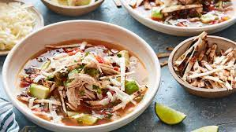

Tortilla Soup

Description
Utter deliciousness. Easy to make with few ingredients.
Ingredients
- 2 tablespoons vegetable oil
- 1 small onion, diced
- 2 tablespoons minced garlic
- 2 jalapenos, finely diced
- 6 cups low-sodium chicken broth
- One 14.5-ounce can fire-roasted diced tomatoes
- One 14.5-ounce can black beans, rinsed and drained
- 3 chicken breasts, boneless and skinless
- 2 limes, juiced, plus wedges for garnish
- Salt and freshly ground black pepper
- 1 cup roughly chopped fresh cilantro leaves
- One 8-inch flour tortilla, grilled, cut into thin strips
- 1 avocado, pitted, sliced
- 1 cup shredded Monterrey cheese
Steps
- In a large saucepan heat the vegetable oil. Add the onions and cook for 2 minutes. Once the onions have softened add the garlic and jalepenos and cook for another minute.
- Pour the chicken broth, tomatoes and beans into the pot and bring to a boil.
- Once at a boil lower heat to simmer and add your chicken breasts. Cook the chicken for 20 to 25 minutes. Once chicken is cooked remove from pot. When cool enough to handle shred it and set it aside.
- Add lime juice and fresh cilantro to the pot.
- In a serving bowl add a mound of shredded chicken. Ladle soup over chicken and top with a lime wedge, grilled tortilla strips, avocado slices and cheese.